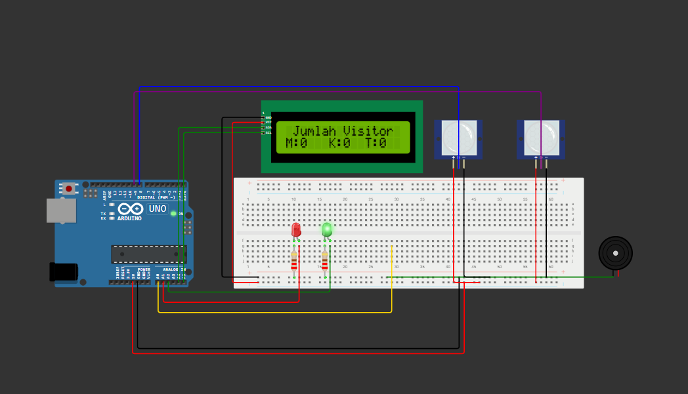

PROJECT 01
Perancangan PCB Minimum System
Perancangan layout PCB menggunakan software desain elektronika, termasuk penyusunan komponen dan jalur pada PCB.
03 / PROJECTS
Beberapa tugas dan praktikum yang pernah dikerjakan selama mempelajari Sistem Komputer.
Perancangan layout PCB menggunakan software desain elektronika, termasuk penyusunan komponen dan jalur pada PCB.

Membuat rangkaian berbasis Arduino untuk menghitung jumlah pengunjung menggunakan sensor. Hasil ditampilkan melalui LCD dan dilengkapi LED serta buzzer.